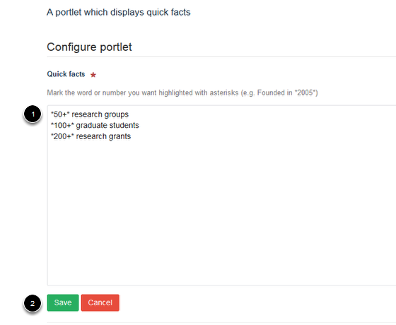

Homepage - Add Quick Facts Portlet¶
The Quick Facts box provides you with a straighforward way to draw attention to key information. Quick facts should be short and preferably include a number which can be highlighted to draw your site visitors to the Quick Facts box. This shows you how to add a Quick Facts portlet to your homepage.
Select Portlets¶
Go to your homepage. Click on Portlets on the toolbar at the top of the page.
Add Quick facts portlet¶

The homepage (below the slideshow) is divided into three columns. Each column is represented on this page by a drop down list. Select the column where you would like your Quick facts portlet to display and click on the dropdown list. Click on Quick facts.
Enter your Quick facts¶
- Add your quick facts into the box - put each fact onto a separate line. You can highlight a number or a word to gain your reader’s attention by putting asterisks around it.
- Click on save.